核心架构
独立 planner 先生成分析计划；主 Agent 在持久 IPython 内核中逐步生成并执行代码；每一步的 stdout、错误、变量摘要与通过 show() 注册的图像进入下一轮上下文，直到调用 ReturnAnswer()。
生成日期：2026 年 6 月 13 日（周六）
信息截止时间：2026-06-13 15:26（Asia/Shanghai）
作者：Seokju Cho、Ryo Hachiuma、Abhishek Badki、Hang Su、Byung-Kwan Lee、Chan Hee Song、Sifei Liu、Subhashree Radhakrishnan、Seungryong Kim、Yu-Chiang Frank Wang、Min-Hung Chen。
链接：arXiv 摘要 · 论文 PDF · 代码仓库 · 项目页
选择理由：该论文在上一份报告截止时间之后提交，直接研究 Agent 的 action interface。它证明工具是否有效，不仅取决于工具本身，也取决于 Agent 能否在看到中间结果后继续组合、修正和验证操作。
English. SpatialClaw is a training-free spatial-reasoning agent that treats executable code as the action interface. Instead of producing a complete program in one pass or invoking tools through a fixed structured schema, the agent writes one Python cell at a time inside a persistent kernel, observes text, variables, errors, and visual outputs, and revises its next action accordingly. Across 20 static and dynamic 3D/4D spatial-reasoning benchmarks, SpatialClaw reaches 59.9% average accuracy with a Gemma4-31B backbone, outperforming the strongest recent spatial-agent baseline by 11.2 percentage points and improving consistently across six open-source VLM backbones.
中文翻译。SpatialClaw 是一个无需训练的空间推理 Agent，以可执行代码作为 action interface。它不要求 Agent 一次性生成完整程序，也不把操作限制在固定的结构化工具调用模式中；Agent 会在持久 Python 内核里逐步编写代码单元，观察文本、变量、错误和视觉输出，并据此修正下一步动作。在 20 个静态与动态 3D/4D 空间推理 benchmark 上，使用 Gemma4-31B 作为骨干模型时，SpatialClaw 达到 59.9% 平均准确率，比最强的近期空间 Agent 基线高 11.2 个百分点，并在六个开源 VLM 骨干上持续取得提升。
独立 planner 先生成分析计划；主 Agent 在持久 IPython 内核中逐步生成并执行代码；每一步的 stdout、错误、变量摘要与通过 show() 注册的图像进入下一轮上下文，直到调用 ReturnAnswer()。
把代码从一次性产物改造成可观察、可迭代的 action interface。Agent 能复用先前的分割、深度、重建和几何变量，并根据问题动态组合 NumPy、SciPy、Matplotlib 与感知工具。
在相同 Gemma4-31B 骨干下，SpatialClaw 平均准确率 59.9%，Structured Tool-Call 为 56.7%，Single-Pass Code 为 55.2%，No-tool 为 53.4%。在 13 个元类别中的 11 个优于两种 action-interface 基线。
LLM-as-judge 将 52.2% 的胜例归因于代码组合、19.5% 归因于控制流。剩余错误中，几何计算错误占 21%，工具选择/覆盖错误占 18%。作者明确指出当前瓶颈已更多转向 VLM 和底层感知工具质量。
可信度判断：覆盖 20 个 benchmark、六个开源骨干，并保持统一 prompt、工具集和配置，横向比较较扎实；但部分 benchmark 仅随机采样 1,000 个样本，工具消融仅在 15 个 benchmark 各 500 个样本上进行；胜因与失败模式依赖 Gemini-3.1-Pro 作为 judge，存在评判模型偏差。
论文共包含 7 幅 Figure 与 6 张 Table，以下全部附上。密集表格采用原始 PDF 清晰截图，避免转写造成数值错误。
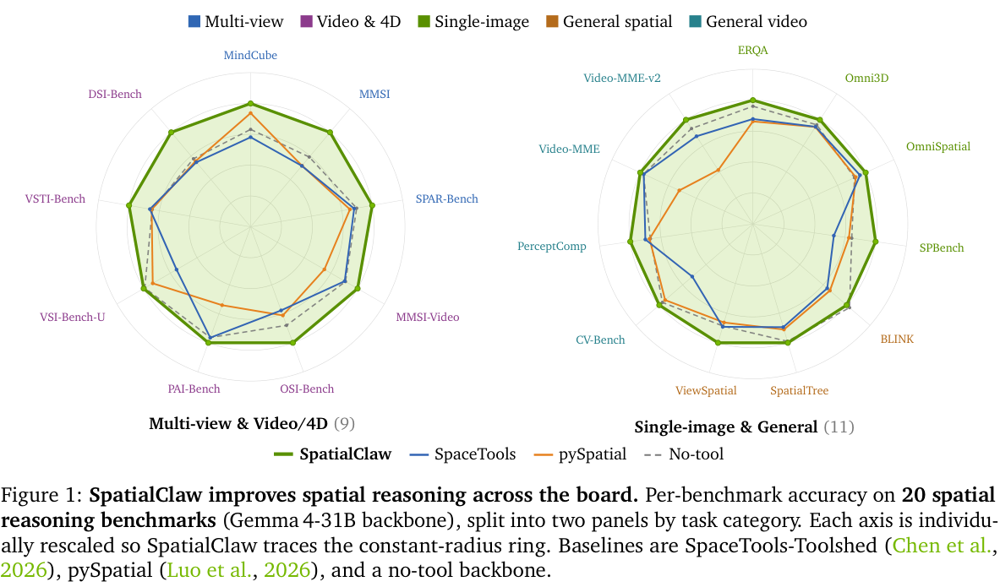
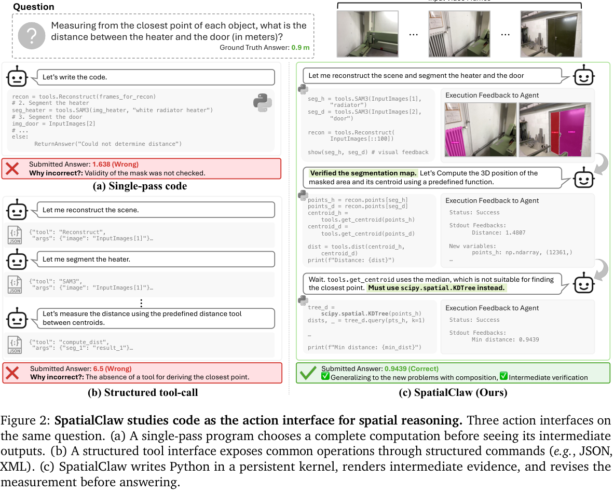
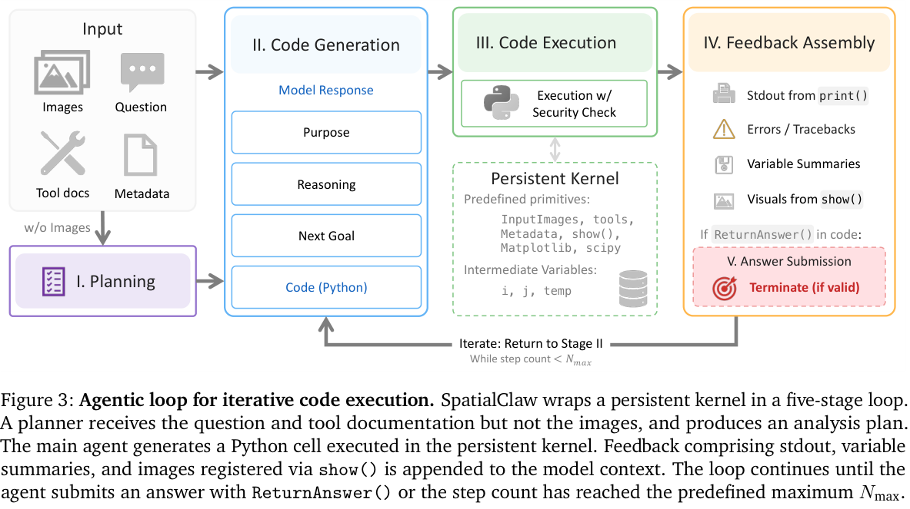
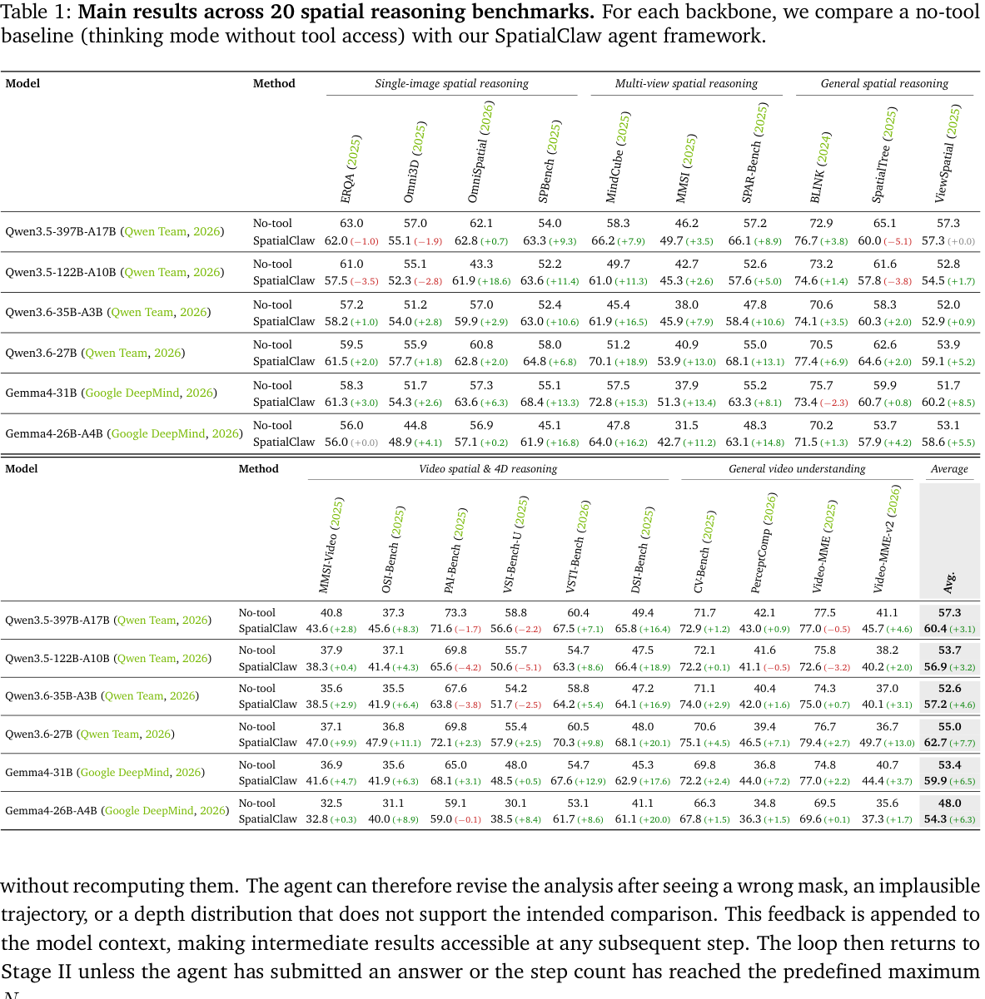
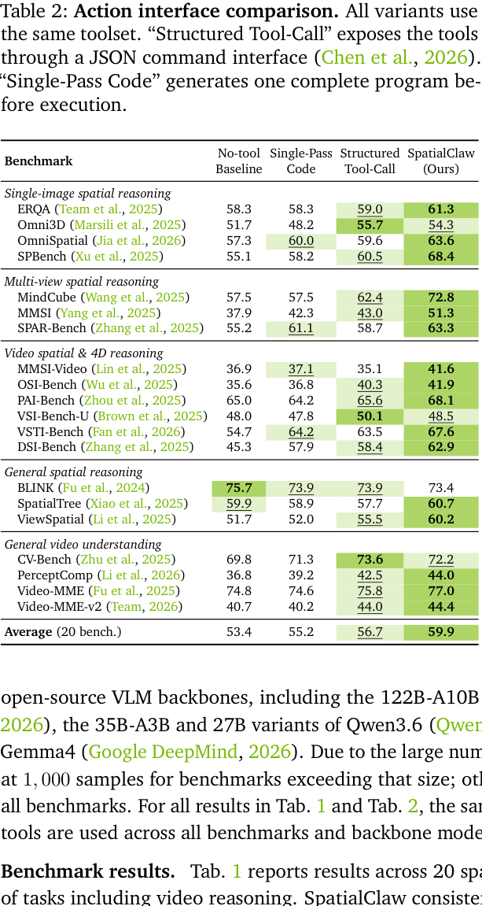
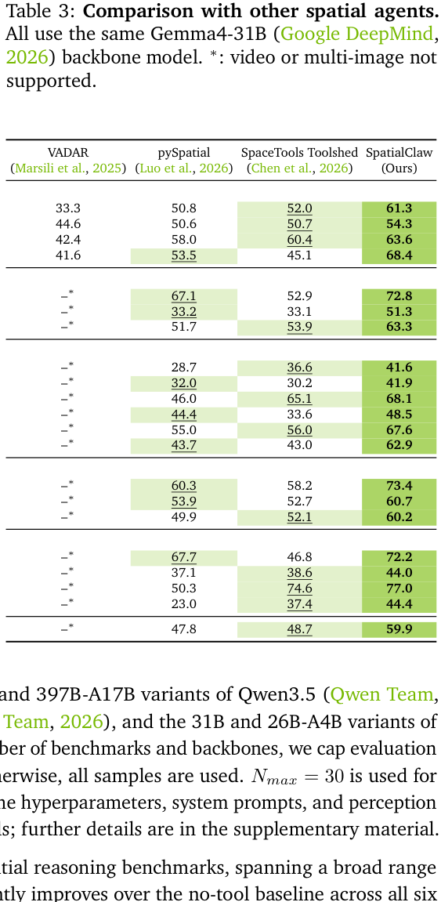
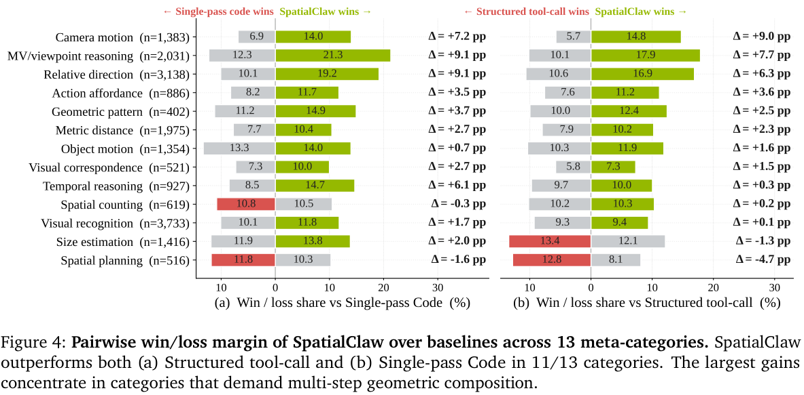
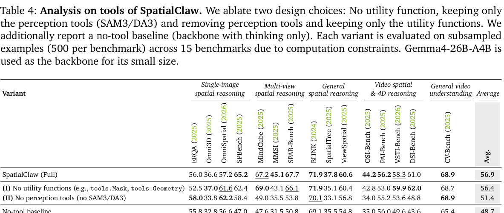
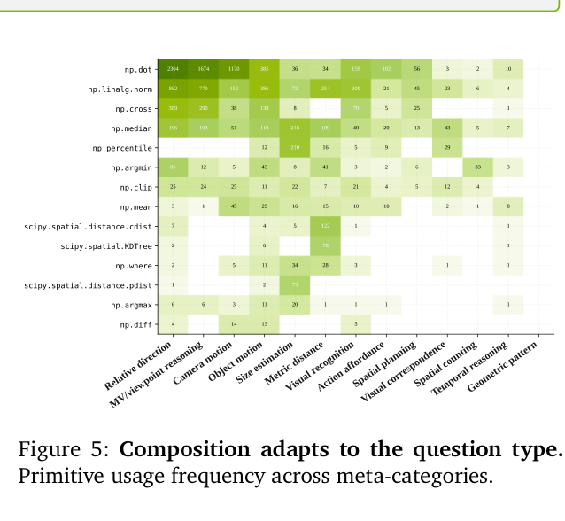
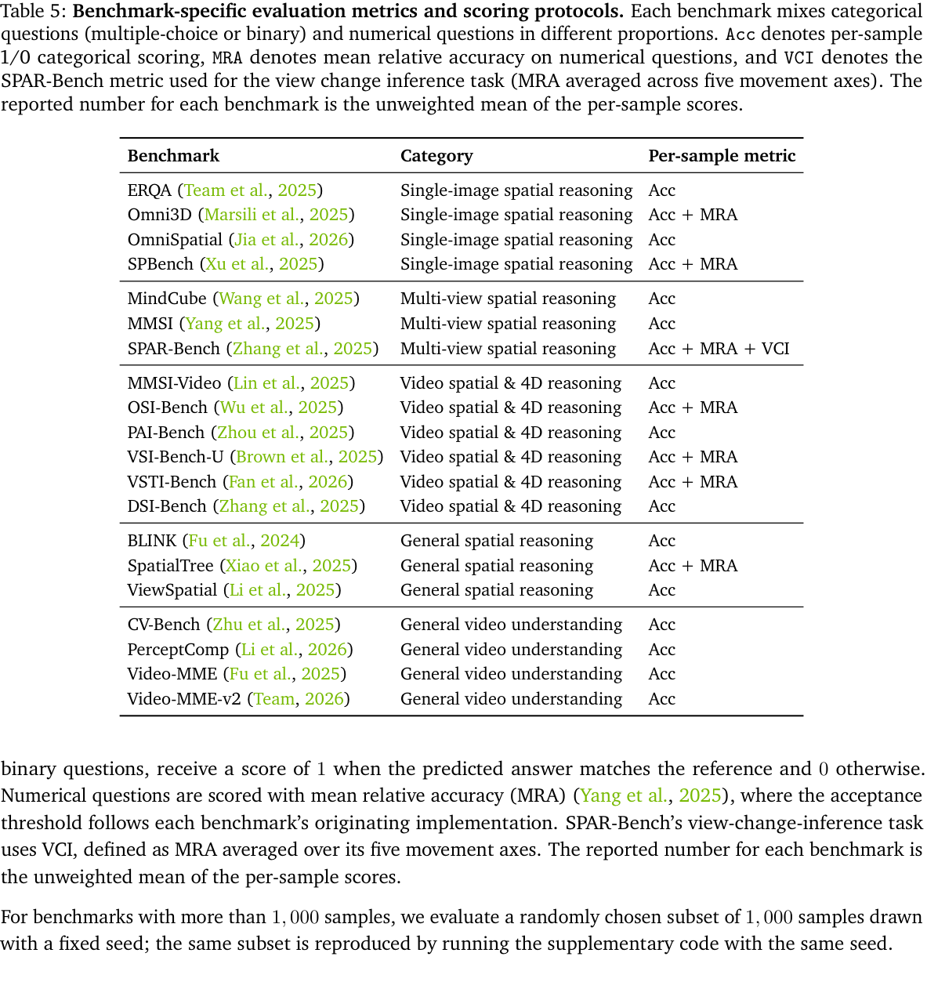
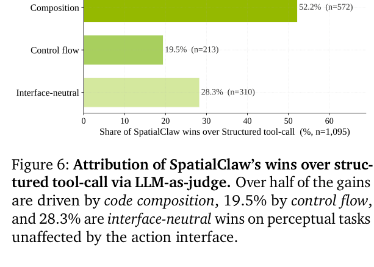
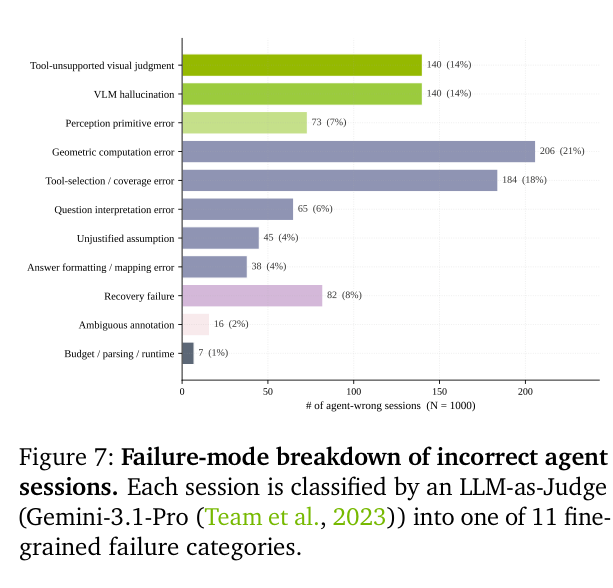
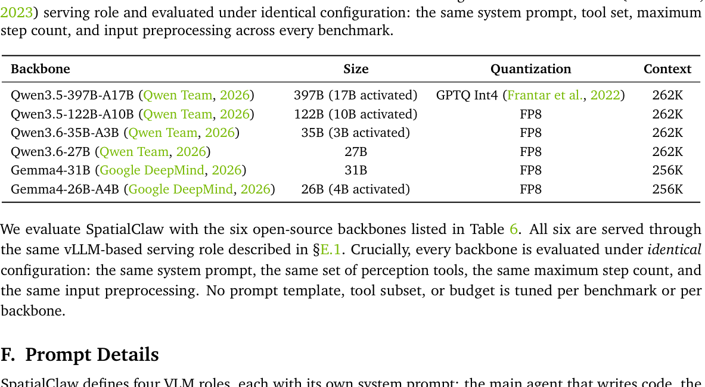
当前没有 2026-06-10 或 2026-06-11 的约 72 小时快照。为避免编造三日增量，本榜使用上一份报告中同一组高相关仓库的 2026-06-12 10:00 快照，计算至 2026-06-13 15:26 的约 29.5 小时可验证净增，并按净增排序。这是当前最接近、且时间窗一致的可验证代理指标。
| # | 项目 | 用途 | 当前 Star | 约 29.5 小时新增 | 主要语言 | 最近更新（UTC） |
|---|---|---|---|---|---|---|
| 1 | NousResearch/hermes-agent | 强调长期适应与能力积累的个人 Agent。 | 192,193 | +1,139 | Python | 2026-06-13 07:24 |
| 2 | affaan-m/ECC | 跨 Claude Code、Codex、OpenCode、Cursor 的 Agent harness 优化系统。 | 214,453 | +887 | JavaScript | 2026-06-13 07:24 |
| 3 | anomalyco/opencode | 开源 coding agent 与可替换 Agent harness。 | 173,814 | +537 | TypeScript | 2026-06-13 07:23 |
| 4 | n8n-io/n8n | 支持 AI 与大量业务集成的工作流自动化平台。 | 192,267 | +157 | TypeScript | 2026-06-13 07:16 |
| 5 | langgenius/dify | 生产级 agentic workflow 开发平台。 | 145,027 | +135 | TypeScript | 2026-06-13 07:23 |
补充观察：在拥有 6 月 9 日快照的早期 skills 样本中，截至当前约 100.5 小时的净增为 GordenSuperPPTSkills +414、baoyu-design +308、guard-skills +130、AgentHarness +83、DeepX +57、codex-chatgpt-control +50。由于窗口不同，未与上表混排。
执行前已检查本周此前三份 morning-brief*.html，排除所有曾在 GitHub 板块或论文代码链接中出现的仓库。筛选范围包括 AI Agent、Agent 架构、多智能体、coding agent、Agent Skill、MCP、工具链与运行时；以下按当前总 Star 降序。
378,452 ★ · TypeScript · 更新于 2026-06-13 07:19 UTC
跨操作系统与平台运行的个人 AI assistant。值得关注：它代表通用个人 Agent 从单一终端或单一聊天入口走向跨平台执行层。
226,262 ★ · Shell · 更新于 2026-06-13 07:22 UTC
Agentic skills 框架与软件开发方法论。值得关注：本周 GitHub 增长反复指向“可组合 skills + 固化工程方法”，该项目是这一方向的高规模代表。
193,705 ★ · Rust · 更新于 2026-06-13 07:24 UTC
由 Agent 管理和持续开发的软件项目。值得关注：它提供了观察“Agent 作为长期软件维护主体”所需的代码、运行时和治理实验样本。
184,923 ★ · Python · 更新于 2026-06-13 07:13 UTC
面向通用自主 Agent 构建与使用的平台。值得关注：作为早期通用 Agent 代表，其架构演进可以与当前 skills、harness 和标准协议趋势对照。
174,386 ★ · 未标注 · 更新于 2026-06-13 07:23 UTC
通过单一 CLAUDE.md 将编码经验与行为约束注入 Claude Code。值得关注：它说明轻量文本化 skills 也能以极低集成成本改变 coding-agent 行为。
检查窗口：自上一份报告截止时间 2026-06-12 10:00 CST 至 2026-06-13 15:26 CST。
2026-06-12 10:00 UTC · 官方教育/开发者应用更新
OpenAI 发布三门 Academy 课程，目标是帮助用户建立实用 AI 技能、构建可重复工作流，并在日常工作中应用 Agent。该更新不是模型或 API 发布，但反映官方正在把 Agent 使用方式产品化、课程化。
OpenAI 官方视频：在本次检查窗口内未发现可核验的新发布内容。
2026-06-12 · 官方模型访问声明
Anthropic 发布 Fable 5 的访问声明。官方页面仅标注日期、未提供精确时间；该条目未出现在上一份日报中，因此纳入本次更新。其重点是说明模型访问状态与相关限制，而不是新增技术能力。
2026-06-12 · 官方研究文章
Anthropic 与 Periodic Labs、Pollara 和多伦多大学开展跨实验室合作，研究人们如何使用 AI，以及用户的偏好、体验和态度。该项目属于 AI 使用与社会影响研究。
Anthropic 官方视频：在本次检查窗口内未发现可核验的新发布内容。
覆盖范围：2026-06-08 至 2026-06-12；仅总结本次运行前已经发布的三份报告，不包含今天的 SpatialClaw、今日 GitHub 榜单和今日官方动态。
| 主题 | 本周论文 | 共同模式与关键结果 | 局限与可信度 |
|---|---|---|---|
| 可验证反馈循环 | QBugLM | 将缺陷生成、定位、修复和确定性模拟验证组成闭环；允许重试后，Pass@1 从低于 25% 提升到高于 80%。 | 仅覆盖五个五量子位电路和两种模型，不能直接外推到真实量子硬件。 |
| 生产自治与安全 | Autonomous Incident Resolution at Hyperscale | Intake、Planning、Execution、Verification 四类 Agent；以分层授权、爆炸半径、熔断和回滚支撑渐进式自治。作者报告成熟故障类别自动解决率超过 90%。 | 缺少公开样本规模、基线和代码，更适合作为架构参考，而不是严格 benchmark 证据。 |
| 评测接口标准化 | AgentBeats | 把评测实现为 judge agent，用 A2A 管理任务、MCP 提供工具，使集成量从 N×M 降为 N+M；原生模型-harness 配对在六次比较中赢得五次。 | 依赖协议包装和自选择竞赛样本；结果说明 harness 协同适配，不能当作纯模型排名。 |
共同架构模式：三篇论文都把“一次生成答案”改造成可观察、可验证、可重试的过程；都将执行与验证分离；都说明 Agent 的真实能力由模型、工具、协议、harness、安全机制和反馈共同决定。


| 项目 | 06-08 | 06-09 | 06-12 | 截至今日补充观察 | 周内判断 |
|---|---|---|---|---|---|
| GordenSuperPPTSkills | #3 · 247 | #3 · 439 | #1 · 790 | 853 | 周内反超成为 skills 样本第一，增长持续且斜率最高。 |
| baoyu-design | #1 · 453 | #1 · 531 | #2 · 775 | 839 | 持续高速增长，说明可直接产出设计结果的 Agent Skill 需求强。 |
| guard-skills | #2 · 413 | #2 · 474 | #3 · 571 | 604 | 稳定增长；代码质量与 Agent 治理开始成为独立技能类别。 |
| AgentHarness | 未入榜 | #5 · 49 | #4 · 122 | 132 | 新出现后快速增长，评测 harness 与论文趋势相互印证。 |
| codex-chatgpt-control | #4 · 123 | #4 · 159 | #5 · 205 | 209 | 仍增长但明显放缓。 |
下周最值得跟踪的 5 个项目：hermes-agent（持续型个人 Agent）、ECC（跨 harness 优化）、opencode（coding-agent harness）、AgentHarness（评测基础设施）、GordenSuperPPTSkills（高增长 Agent Skill）。
| 仓库 | 历史快照 | 当前快照 | 可验证变化 |
|---|---|---|---|
| NousResearch/hermes-agent | 191,054（06-12） | 192,193 | +1,139 / 约 29.5h |
| affaan-m/ECC | 213,566（06-12） | 214,453 | +887 / 约 29.5h |
| anomalyco/opencode | 173,277（06-12） | 173,814 | +537 / 约 29.5h |
| n8n-io/n8n | 192,110（06-12） | 192,267 | +157 / 约 29.5h |
| langgenius/dify | 144,892（06-12） | 145,027 | +135 / 约 29.5h |
| openclaw/openclaw | 无历史快照 | 378,452 | 不计算 |
| obra/superpowers | 无历史快照 | 226,262 | 不计算 |
| ultraworkers/claw-code | 无历史快照 | 193,705 | 不计算 |
| Significant-Gravitas/AutoGPT | 无历史快照 | 184,923 | 不计算 |
| multica-ai/andrej-karpathy-skills | 无历史快照 | 174,386 | 不计算 |
openclaw/openclaw、obra/superpowers、ultraworkers/claw-code、Significant-Gravitas/AutoGPT、multica-ai/andrej-karpathy-skills。
morning-brief-test-2026-06-08.html、morning-brief-2026-06-09.html、morning-brief-2026-06-12.html。
SpatialClaw arXiv · SpatialClaw GitHub · SpatialClaw Project · GitHub Repository Search · OpenAI News · OpenAI Academy Courses · Anthropic News · Fable 5 Access Statement · Building the Public Record